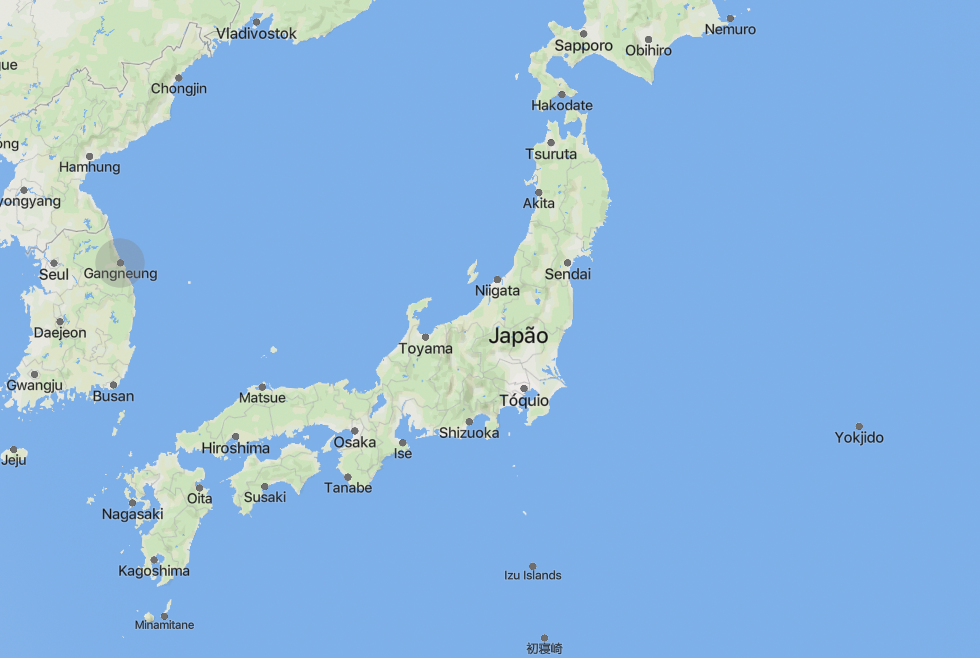

geografia
O Japão é um arquipélago no Oceano Pacífico, composto por quatro ilhas principais: Honshu, Hokkaido, Kyushu e Shikoku.
Cerca de 70% do país é montanhoso, incluindo o Monte Fuji. O Japão tem muitos rios curtos e rápidos,
e seu terreno inclui vales profundos e planícies costeiras densamente povoadas.
A alta atividade sísmica e vulcânica é uma característica devido à sua localização.
O clima varia de subtropical no sul a temperado no norte, com diversas paisagens naturais.

Murilo Oliveira 2024 - © Todos os direitos reservados